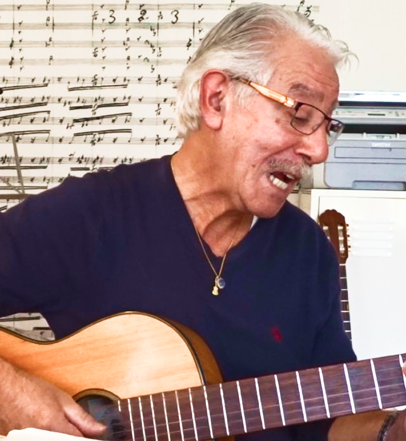
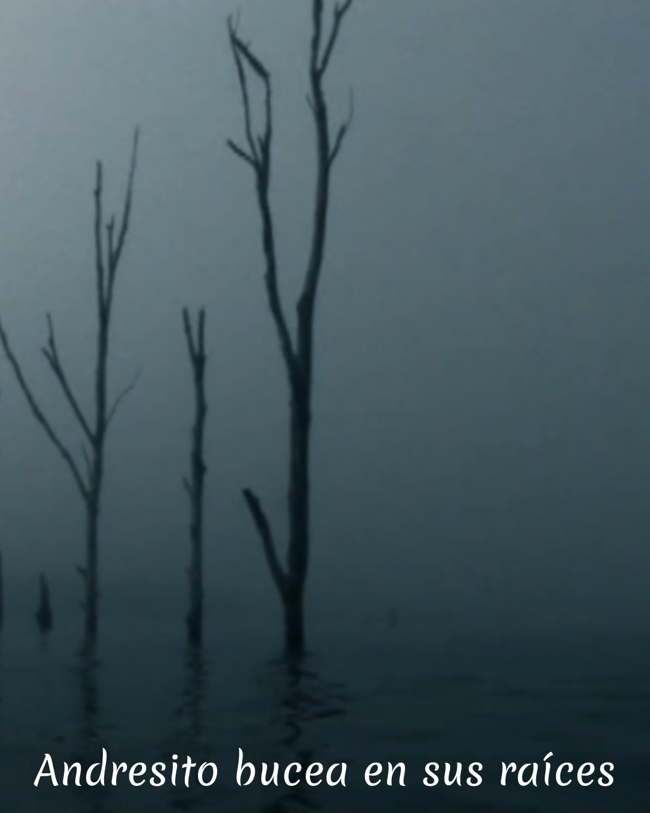
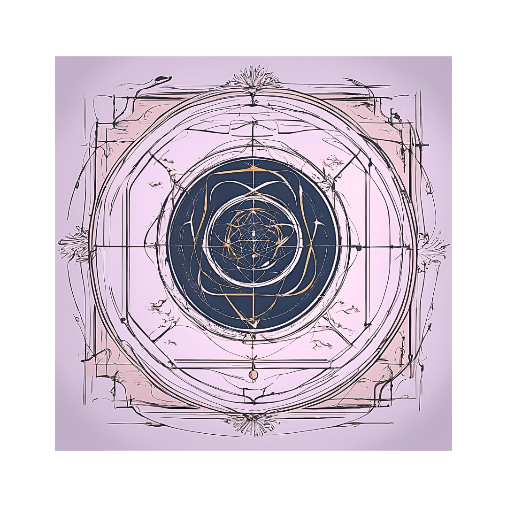
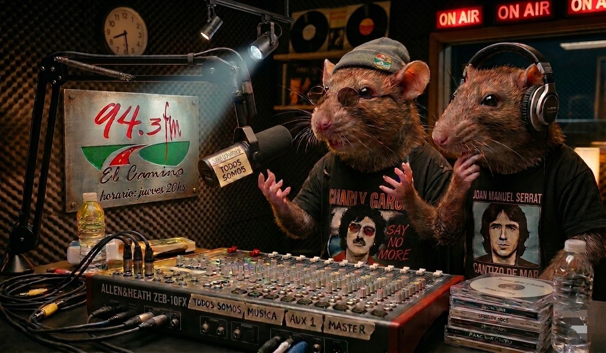

Por Carlos Felipe Zeballos

En el marco del proyecto 20 pueblos, 20 memorias,en el año 2011, bicentenario del comienzo del proceso independentista nacional, el pueblo Andresito, del departamento de Flores, Uruguay cuenta su historia.
Registros fotográficos, escritos, plásticos y sobre todo vivenciales se encuentran en este audiovisual generando en forma dinámica, un encuentro con un poco de la historia de los pueblos del interior profundo del país, también atravesado por las decisiones autoritarias de la última dictadura cívico-militar que sometió al país y a su gente.

Cuando en el basural de cada día encontramos una perla, una buena madera para La Balsa, lo menos que podemos hacer es llevarla a casa.
Luego, con calma, ya veremos si es de proa, de remos, o de fuego que abriga e ilumina.
Lo importante es rescatar buenos lugares que nos desafían con cada invitación.
Con ustedes: www.laplazafilosofica.com

Mario caminaba por una vereda y Nacho por otra. Tranquilamente.
Un lunes se subieron a una mínima balsa y sus palabras empezaron a enredarse. Con fluidez soltaban frases que no tenían más sentido que el instante que las recibía.
Sin embargo al escuchar a unas, pegadas a las otras, con una canción de Charly o con una interpretación de Joan Manuel en el medio, era como si las músicas empezaran allá y nos dejaran mucho más allá.
Así nace Todos Somos.
Con linternas de exploradores entran en esta cueva, donde las palabras, las propias y las prestadas, son la excusa para el encuentro.